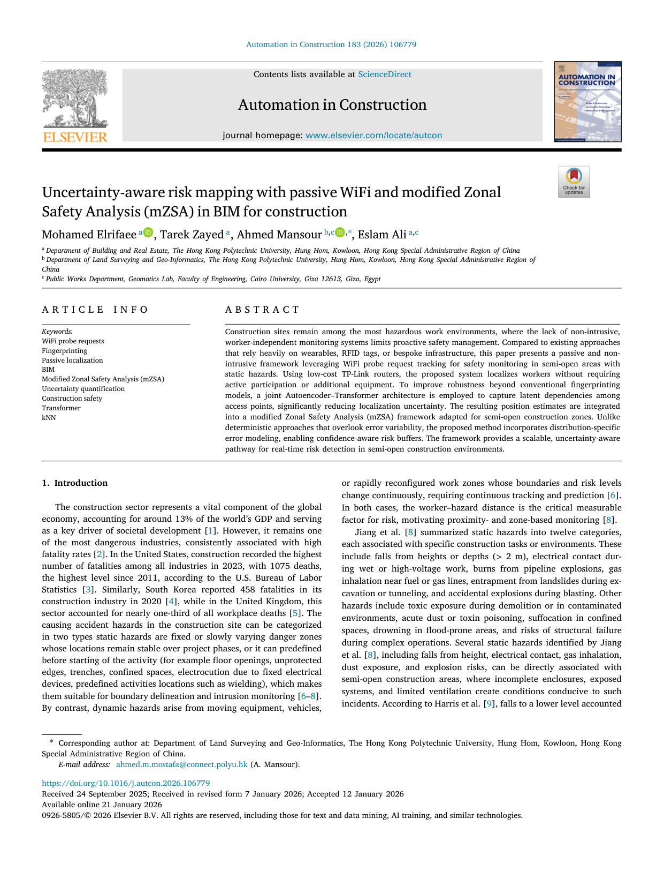

Uncertainty-aware risk mapping with passive WiFi and modified Zonal Safety Analysis (mZSA) in BIM for construction
Paper preview

Research story and quick reading guide
This paper applies indoor localization thinking to construction safety. Construction sites are dynamic, hazardous, and difficult to monitor continuously. Many safety-monitoring systems require wearables, tags, active user participation, or dedicated infrastructure. These approaches can be useful, but they may increase user burden or be difficult to maintain. The paper proposes a passive WiFi-based framework that uses probe request tracking and uncertainty-aware risk mapping to support construction safety monitoring without requiring workers to actively interact with the system.
The central story is passive WiFi observations → worker location uncertainty → spatial risk model → BIM-based safety visualization → proactive decision support. This flow is important because it turns positioning information into safety information. The goal is not merely to estimate where a person is; it is to understand whether the person is near a hazard zone and how uncertain that assessment is. This makes uncertainty a first-class part of the decision process.
The paper combines passive localization with modified Zonal Safety Analysis in a BIM context. BIM provides a spatial and semantic representation of the construction environment, while WiFi sensing provides movement-related information. Modified Zonal Safety Analysis helps connect worker presence with hazard zones. The uncertainty-aware component is critical because location estimates are never perfect. A safety system should not hide uncertainty; it should represent it so that managers can interpret risk more responsibly.
The work is valuable because it shows how IPS-derived information can support a higher-level operational task. In many studies, localization accuracy is the final output. Here, localization becomes an input to risk mapping. This is a strong example of moving from coordinates to spatial intelligence. The system supports construction management by translating uncertain positioning into actionable risk awareness.
For a quick visualization, the paper can be read as signals → positions → uncertainty zones → risk map → safety action. This chain makes the work relevant not only to construction safety but also to broader applications where indoor positioning feeds decision support, such as facility management, emergency response, and smart built environments.
This paper should be cited when discussing passive WiFi localization, construction safety monitoring, BIM-based spatial risk mapping, uncertainty-aware positioning, modified Zonal Safety Analysis, and the use of indoor positioning data for decision-ready safety applications.
Extended summary
This paper integrates passive WiFi localization, uncertainty-aware risk mapping, and BIM-based safety analysis to support non-intrusive construction safety monitoring and spatial risk assessment.
When to cite this paper
- passive WiFi is used for worker or device localization in construction
- BIM-based construction safety and risk mapping are discussed
- uncertainty-aware localization outputs support safety decisions
- fingerprinting and machine learning are applied to site safety monitoring
Keywords
passive WiFifingerprintingpassive localizationBIMmodified Zonal Safety Analysisuncertainty quantificationconstruction safetyTransformerkNN
Official link
https://doi.org/10.1016/j.autcon.2026.106779
For publisher-restricted articles, link to the DOI or an allowed accepted manuscript rather than uploading a restricted PDF.
BibTeX
@article{Elrifaee2026uncertaintyaware,
title = {Uncertainty-aware risk mapping with passive WiFi and modified Zonal Safety Analysis (mZSA) in BIM for construction},
author = {Mohamed Elrifaee and Tarek Zayed and Ahmed Mansour and Eslam Ali},
year = {2026},
journal = {Automation in Construction},
doi = {10.1016/j.autcon.2026.106779},
}